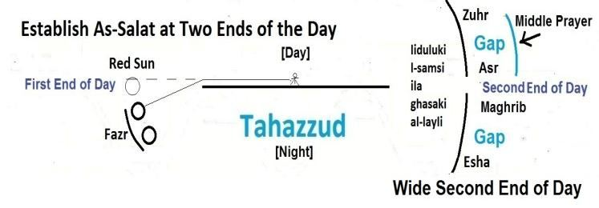

―Establish Salat (Akimi I-salata) at the sun's decline till the darkness of the night (liduluki I- samsi ila ghasaki al-layli); and the recital of the Qur'an in the morning prayer, for the recital of dawn is witnessed.‖ [Al Quran 17:78]
- সূর্য ঢলে পড়ার সময় রাতের আঁধার পর্যন্ত সালাত কায়েম কর (লিদুলুকি আই- সামসি ইলা গাসাকি আল-লায়লি); এবং সকালের নামাযে কুরআন তেলাওয়াত, কারণ ভোরের তেলাওয়াত সাক্ষী হয়।'' [আল কুরআন 17:78]
The above verse (17:78) clarifies the second end of a day mentioned in the verse under discussion (11:114), as it states: "Establish Salat at the sun's decline till the darkness of the night…" (liduluki I-samsi ila ghasaki al- layli). It combines the Asr and Maghrib prayers into one broad timeframe and elongates the time into the darkness of the night. Thus, the fundamental command to establish salat at two ends of the day remains valid—the second end of the day is divided into two parts: the time before sunset (Asr/Middle Prayer) and the time after sunset (Maghrib). The command to establish salat (Akimi I-salat) is fulfilled by praying in a group (jamat) under the local Imam. Therefore, these three prayers (Fazr, Asr, Maghrib), especially the Middle Prayer (Asr), must be performed in congregation (typically in the local mosque). These are not individual prayers, which can be prayed at home.
উপরের আয়াতটি (17:78) আলোচ্য আয়াতে (11:114) উল্লিখিত দিনের দ্বিতীয় প্রান্তকে স্পষ্ট করে, কারণ এতে বলা হয়েছে: "রাত্রির আঁধার পর্যন্ত সূর্য অস্ত যাওয়ার সময় সালাত কায়েম কর..." (লিদুলুকি আই-সামসি ইলা গাসাকি আল-লায়লি)। এটি আসর এবং মাগরিবের নামাজকে একটি বিস্তৃত সময়সীমার মধ্যে একত্রিত করে এবং সময়কে রাতের অন্ধকারে দীর্ঘায়িত করে। এইভাবে, দিনের দুই প্রান্তে ছালাত কায়েম করার মৌলিক আদেশটি বৈধ থাকে- দিনের দ্বিতীয় প্রান্তটি দুটি ভাগে বিভক্ত: সূর্যাস্তের পূর্বের সময় (আসর/মধ্যের সালাত) এবং সূর্যাস্তের পরের সময় (মাগরিব)। স্থানীয় ইমামের অধীনে একটি দলে (জামাতে) নামায পড়ার মাধ্যমে ছালাত (আকিমি ই-সালাত) প্রতিষ্ঠার আদেশ পূর্ণ হয়। অতএব, এই তিনটি নামাজ (ফজর, আসর, মাগরিব), বিশেষ করে মধ্যবর্তী নামাজ (আসর) অবশ্যই জামাতে (সাধারণত স্থানীয় মসজিদে) আদায় করতে হবে। এগুলি স্বতন্ত্র প্রার্থনা নয়, যা বাড়িতে প্রার্থনা করা যেতে পারে।
3. Prophet‘s Salat and Sunni Confusion
3. নবীর সালাত এবং সুন্নি বিভ্রান্তি
The Sahabah needed strong Faith on God, because they were to stand against well-equipped Byzantine and Persian Armies. They needed good knowledge of the Quran, because they were to preach Islam in the captured area (Darussalam / Home of Peace / Morocco to the Pamirs). They needed to memorize the Quran because, in those days, books were written on skins, which were rare, heavy, and difficult to carry. Therefore, the Prophet (pbuh) extended the times of salat to keep the Sahabah in the mosque for longer periods, allowing him to instill the aforementioned qualities and capabilities in his followers. Prophet (pbuh) widened the times in light of the Verse 17:78 mainly. Normally, he used to get the Sahabah called by adhan early at noon and used to pray four rakats that has become Zuhr prayer. He used to pray another four rakats after a time-gap, which has become Asr prayer. Actually, these two prayers (Zuhr and Asr) jointly make the Middle Prayer. Prophet (pbuh) used to pray the prayer of Asr with ekamat—there were no adhan—which proves that these two prayers are parts of Middle Prayer. Sometimes he used to pray the prayer of Asr immediately after the prayer of Zuhr, and sometimes he used to delay. So, the Sahabah did not know when the Prophet (pbuh) would start praying the prayer of Asr. So, they used to remain in the mosque. Within the gap between Zuhr and Asr prayers, Prophet (pbuh) used to talk to the Sahabah, or they used to do Zikr individually or in group, or used to discuss the Quran in groups, or used to memorize the Quran. It strengthened their Faiths on God, increased their religious knowledge, and allowed the Quran to be memorized. Many of them became the preservers (Hafiz) of the Quran. After the Middle Prayer (after Asr), the Prophet (pbuh) used to move out from the mosque. This break would begin when the sun started to turn red and would continue until the sun had set. During this break, the Sahabah would return home and prepare for the night by bringing the cattle home, securing scattered household goods, lighting the houses, and so on.
সাহাবাদের ঈশ্বরের প্রতি দৃঢ় বিশ্বাসের প্রয়োজন ছিল, কারণ তারা সুসজ্জিত বাইজেন্টাইন এবং পারস্য সেনাবাহিনীর বিরুদ্ধে দাঁড়াতে হয়েছিল। তাদের কুরআনের ভালো জ্ঞানের প্রয়োজন ছিল, কারণ তারা দখলকৃত এলাকায় (দারুসসালাম / শান্তির বাড়ি / পামিরদের কাছে মরক্কো) ইসলাম প্রচার করতে হয়েছিল। তাদের কুরআন মুখস্থ করা দরকার ছিল কারণ, সেই দিনগুলিতে, বইগুলি চামড়ার উপর লেখা হত, যা বিরল, ভারী এবং বহন করা কঠিন ছিল। তাই, নবী (সাঃ) ছালাতের সময়গুলোকে দীর্ঘ সময়ের জন্য মসজিদে সাহাবীদের রাখার জন্য বাড়িয়ে দিয়েছিলেন, যার ফলে তিনি তাঁর অনুসারীদের মধ্যে উল্লিখিত গুণাবলী এবং ক্ষমতাগুলিকে সঞ্চারিত করতে পারেন। নবী (সাঃ) প্রধানত ১৭:৭৮ আয়াতের আলোকে সময়কে প্রশস্ত করেছেন। সাধারনত, তিনি দুপুরের আগে আযান দিয়ে সাহাবীদের ডাকতেন এবং চার রাকাত পড়তেন যা যোহরের নামায হয়ে গেছে। তিনি সময়ের ব্যবধানে আরও চার রাকাত সালাত আদায় করতেন, যা আসরের সালাতে পরিণত হয়েছে। প্রকৃতপক্ষে, এই দুই সালাত (যোহর ও আসর) যৌথভাবে মধ্যবর্তী সালাত আদায় করে। রাসুল (সাঃ) আসরের নামায একমতের সাথে পড়তেন-কোনও আযান ছিল না-যা প্রমাণ করে যে এই দু'টি নামায মধ্য নামাযের অংশ। কখনো যোহরের নামাযের পরপরই আসরের সালাত আদায় করতেন, আবার কখনো দেরী করে পড়তেন। তাই, সাহাবায়ে কেরাম জানতেন না কখন রাসুল (সাঃ) আসরের সালাত পড়া শুরু করবেন। তাই তারা মসজিদেই থাকতেন। যোহর ও আসরের নামাযের মধ্যবর্তী ব্যবধানে রাসূল (সাঃ) সাহাবাদের সাথে কথা বলতেন, অথবা তারা পৃথকভাবে বা দলগতভাবে জিকির করতেন, অথবা দলে দলে কুরআন নিয়ে আলোচনা করতেন, অথবা কুরআন মুখস্থ করতেন। এটি ঈশ্বরের প্রতি তাদের বিশ্বাসকে শক্তিশালী করেছে, তাদের ধর্মীয় জ্ঞান বৃদ্ধি করেছে এবং কুরআন মুখস্থ করার অনুমতি দিয়েছে। তাদের অনেকেই কুরআনের সংরক্ষক (হাফিজ) হয়েছিলেন। মধ্যবর্তী নামাযের পর (আসরের পর) রাসূল (সাঃ) মসজিদ থেকে বের হতেন। এই বিরতি শুরু হবে যখন সূর্য লাল হতে শুরু করবে এবং সূর্যাস্ত পর্যন্ত চলতে থাকবে। এই বিরতির সময় সাহাবায়ে কেরাম বাড়ি ফিরতেন এবং গবাদিপশু বাড়িতে নিয়ে আসতেন, ছড়িয়ে ছিটিয়ে থাকা গৃহস্থালির মালামাল রক্ষা করতেন, ঘরে আলো জ্বালাতেন ইত্যাদি।
FIGURE 11.5: The Prophet‘s (pbuh) Salat

চিত্র 11_5 / Figure 11_5
চিত্র 11.5: নবী (সাঃ) এর সালাত
চিত্র 11_5 / Figure 11_5
Similarly, Prophet (pbuh) used to pray the prayers of Maghrib and Esha after the sunset. For Maghrib, the people used to be called by adhan; Esha used to be prayed after ekamat. Prophet (pbuh) used to perform the above prayers with two adhans. So, including the prayers of Fazr, he established salat thrice daily. However, all four prayers such as Zuhr, Asr, Maghrib, and Esha fall into the second end of a day. So, it can also be said that the Prophet (pbuh) established salat at two ends of the day. The confusion of Sunni Muslims has arisen as they introduced five adhans. They started the practice of five adhans in the Mosque of Madinah after Prophet (pbuh) had departed. The Prophet (pbuh) was actually training his Sahabah for both warfare and the propagation of Islam. Thus, he extended the times of salat in accordance with Verse 17:78. Today, our mosques are not as active, so we may reduce the times by following the system mentioned in Verse 11:114.
একইভাবে রাসুল (সাঃ) সূর্যাস্তের পর মাগরিব ও এশার নামাজ পড়তেন। মাগরিবের জন্য মানুষ আযান দিত; একমতের পর এশার নামাজ পড়তেন। নবী (সাঃ) উপরোক্ত নামায দুটি আযান দিয়ে আদায় করতেন। তাই ফজরের নামাজসহ প্রতিদিন তিনবার ছালাত কায়েম করতেন। যাইহোক, যোহর, আসর, মাগরিব এবং এশার মতো চারটি নামাজই দিনের দ্বিতীয় প্রান্তে পড়ে। সুতরাং, এটাও বলা যেতে পারে যে, নবী (সাঃ) দিনের দুই প্রান্তে ছালাত কায়েম করেছেন। পাঁচটি আযান চালু করায় সুন্নি মুসলমানদের মধ্যে বিভ্রান্তির সৃষ্টি হয়েছে। রাসুল (সাঃ) চলে যাওয়ার পর তারা মদীনার মসজিদে পাঁচটি আযানের অনুশীলন শুরু করে। মহানবী (সাঃ) আসলে তাঁর সাহাবাদেরকে যুদ্ধ এবং ইসলাম প্রচার উভয়ের জন্যই প্রশিক্ষণ দিয়েছিলেন। এভাবে তিনি ১৭:৭৮ আয়াত অনুসারে ছালাতের সময় বাড়িয়ে দেন। আজ, আমাদের মসজিদগুলি ততটা সক্রিয় নয়, তাই আমরা আয়াত 11:114 এ উল্লিখিত পদ্ধতি অনুসরণ করে সময় কমাতে পারি।
2b. Shia System
2 খ. শিয়া ব্যবস্থা
The Shia Muslims mainly follow the timings of Verse 11:114. The tradition of three salats is set in the Mosque of Kufa by Hadrat Ali (R.). Prophet (pbuh) was a city of knowledge and Hadrat Ali (R.) was its gate. So, whatever Hadrat Ali (R.) instructed was according to the Prophet (pbuh). Establishing salat thrice a day with Middle Prayer in the late afternoon is clearly supported by the verse under discussion (11:114).
শিয়া মুসলমানরা প্রধানত 11:114 আয়াতের সময় অনুসরণ করে। কুফার মসজিদে হযরত আলী (রাঃ) কর্তৃক তিন ছালাতের রেওয়াজ স্থাপিত হয়েছে। রাসুল (সাঃ) ছিলেন জ্ঞানের শহর এবং হযরত আলী (রাঃ) ছিলেন এর দ্বার। সুতরাং, হযরত আলী (রাঃ) যা নির্দেশ দিয়েছিলেন তা রাসূল (সাঃ) অনুসারেই ছিল। মধ্যাহ্নের নামাযের সাথে দিনে তিনবার সালাত কায়েম করার বিষয়টি আলোচ্য আয়াত দ্বারা স্পষ্টভাবে সমর্থিত (11:114)।
3. Incline towards Verse 11:114
3. আয়াত 11:114 এর দিকে ঝোঁক
The following verse suggests to incline towards the ends of day so that people get greater times to have joy.
নিম্নলিখিত আয়াতটি দিনের শেষ দিকে ঝুঁকে যাওয়ার পরামর্শ দেয় যাতে লোকেরা আনন্দের জন্য আরও বেশি সময় পায়।
―Therefore, be patient with what they say and glorify with praises your Lord before rising of the sun (Fazr), and before its setting (Asr / Middle Prayer), and from hours of the night (Maghrib); and glorify ends of the day so that you may have joy.‖ [Al Quran 20:130] The last part of the verse, "…and glorify ends of the day so that you may have joy" does not add new times; it instructs to bring the prayers close to the ends of the day so that people can have enough time to have joy. Therefore, for adhan and compulsory salats in the mosques, the times given in 11:114 should be followed, because it is the primary verse of the Quran ordering to 'Establish Salat' by clearly mentioning Akimi I-salat.
-অতএব, তারা যা বলে তাতে ধৈর্য ধরুন এবং সূর্য উদয়ের আগে (ফজর), এবং তার অস্ত যাওয়ার আগে (আসর / মধ্য নামায) এবং রাতের (মাগরিব) সময় থেকে আপনার পালনকর্তার প্রশংসা সহ পবিত্রতা ঘোষণা করুন; এবং দিনের শেষকে মহিমান্বিত কর যাতে তোমরা আনন্দ পেতে পার৷'' [আল কুরআন 20:130] আয়াতের শেষ অংশ, "...এবং দিনের প্রান্তকে মহিমান্বিত কর যাতে তোমরা আনন্দ পেতে পার" নতুন সময় যোগ করে না; এটি প্রার্থনাকে দিনের শেষের দিকে নিয়ে আসার নির্দেশ দেয় যাতে লোকেরা আনন্দ করার জন্য পর্যাপ্ত সময় পায়। অতএব, মসজিদে আযান এবং বাধ্যতামূলক ছালাতের জন্য, 11:114 এ প্রদত্ত সময়গুলি অনুসরণ করা উচিত, কারণ এটি কুরআনের প্রাথমিক আয়াত যা স্পষ্টভাবে আকীমি ই-সালাত উল্লেখ করে 'নামাজ কায়েম করার' নির্দেশ দেয়।
4. Tahajjud and Extra Prayers
4. তাহাজ্জুদ এবং অতিরিক্ত নামাজ
The following verses called the Prophet (pbuh) many times to celebrate the praises of God.
নিম্নলিখিত আয়াতগুলি আল্লাহর প্রশংসা উদযাপনের জন্য নবী (সাঃ) কে বহুবার ডেকেছে।
―And as for the night keep awake a part of it; an additional prayer for thee: soon will thy Lord raise thee to a station of Praise and Glory!‖ [Al Quran 17:79]
-আর রাত জেগে থাক তার কিছু অংশ; আপনার জন্য একটি অতিরিক্ত প্রার্থনা: শীঘ্রই আপনার পালনকর্তা আপনাকে প্রশংসা ও গৌরবের স্থানে উন্নীত করবেন!'' [আল কুরআন 17:79]
―Bear then with patience all that they say and celebrate the praises of thy Lord before the rising of the sun, and before setting, and celebrate His praises during part of the night and after the prostration‖ [Al Quran 50: 39-40]
"তাহলে তারা যা বলে তা ধৈর্য সহকারে সহ্য করুন এবং সূর্য উদয়ের আগে এবং অস্ত যাওয়ার আগে আপনার পালনকর্তার প্রশংসা করুন এবং রাতের কিছু অংশে এবং সিজদার পরে তাঁর প্রশংসা উদযাপন করুন" [আল কুরআন 50: 39-40]
―Now await in patience the command of thy Lord; for verily thou are in Our eyes. And celebrate the praises of thy Lord the while you stand forth, and of the night glorify Him, and after the stars!‖ [Al Quran 52: 48-49] ―And celebrate the name of thy Lord morning and evening. And part of the night prostrate thyself to Him and glorify Him along night through (Tahajjud)‖ [Al Quran 76: 25-26]
-এখন ধৈর্য সহকারে তোমার পালনকর্তার আদেশের অপেক্ষা কর। কারণ তুমি আমাদের দৃষ্টিতে আছ। এবং যখন আপনি দাঁড়াবেন তখন আপনার পালনকর্তার প্রশংসা করুন, এবং রাতের বেলায় এবং তারার পরে তাঁর মহিমা ঘোষণা করুন!'' [আল কুরআন 52: 48-49] - এবং সকাল-সন্ধ্যা আপনার পালনকর্তার নাম উদযাপন করুন। এবং রাতের কিছু অংশ তাকে সিজদা কর এবং (তাহাজ্জুদের) মাধ্যমে রাতভর তার পবিত্রতা বর্ণনা কর” [আল কুরআন 76:25-26]
The verses call to praise and glorify God, which can be done by zikr and recitation of the Quran. Several of these times match with the times of compulsory group prayers, established in the mosques. So, one may celebrate the praises of God by extra prayer before or after the compulsory group prayers.
আয়াতগুলো আল্লাহর প্রশংসা ও মহিমা ঘোষণা করে, যা জিকির ও কুরআন তেলাওয়াতের মাধ্যমে করা যেতে পারে। এর মধ্যে বেশ কিছু সময় মসজিদে স্থাপিত বাধ্যতামূলক দলগত নামাজের সময়ের সাথে মিলে যায়। সুতরাং, কেউ বাধ্যতামূলক দলগত নামাজের আগে বা পরে অতিরিক্ত প্রার্থনার মাধ্যমে ঈশ্বরের প্রশংসা উদযাপন করতে পারে।
5. Conclusion
5. উপসংহার
5a. Salat in the Extreme North: Salat relates to the ―Revolution of Earth‖. In Makkah, the revolution is clearly defined by the sunrise and sunset. But in the north of the Arctic Circle, a single period of daylight may last for a month or more during the summer, and a night may last for a similar length of time in the winter. In such locations, the revolution of the Earth can be understood by marking East, West, North, and South with the sticks, and the prayer times can be found out by observing the sun or a star. However, the dawn, mid-day, and dusk of these areas are clear to the locals.
5 ক. চরম উত্তরে নামাজ: নামাজ "পৃথিবীর বিপ্লব" এর সাথে সম্পর্কিত। মক্কায়, বিপ্লব সূর্যোদয় এবং সূর্যাস্ত দ্বারা স্পষ্টভাবে সংজ্ঞায়িত করা হয়। কিন্তু আর্কটিক সার্কেলের উত্তরে, গ্রীষ্মকালে দিনের আলোর একটি একক সময়কাল এক মাস বা তার বেশি সময় ধরে থাকতে পারে এবং একটি রাত শীতকালে একই সময়ের জন্য স্থায়ী হতে পারে। এই ধরনের স্থানে লাঠি দিয়ে পূর্ব, পশ্চিম, উত্তর ও দক্ষিণ চিহ্নিত করে পৃথিবীর বিপ্লব বোঝা যায় এবং সূর্য বা নক্ষত্র পর্যবেক্ষণ করে নামাজের সময় বের করা যায়। যাইহোক, এই এলাকাগুলির ভোর, মধ্যাহ্ন এবং সন্ধ্যা স্থানীয়দের কাছে পরিষ্কার।
5b. Fasting near the Arctic Circle: Fasting too relates to the ―Revolution of Earth‖. In light of a Hadith, it can be considered that a day ends when darkness begins to takeover—the red sun may be visible at that time due to the refraction of sunlight in the atmosphere, but the actual sun is already below the horizon. So, a fasting man can break his fast when the sun is red and visible. Therefore, the visibility of the sun is not a matter of consideration for the fasting. A man living near the pole may fast for thirteen hours from before Fazr, marked by a stick.
5 খ. আর্কটিক সার্কেলের কাছাকাছি উপবাস: উপবাসও "পৃথিবীর বিপ্লব" এর সাথে সম্পর্কিত। একটি হাদিসের আলোকে, এটি বিবেচনা করা যেতে পারে যে একটি দিন শেষ হয় যখন অন্ধকার গ্রহণ শুরু হয় - বায়ুমণ্ডলে সূর্যালোকের প্রতিসরণের কারণে সেই সময় লাল সূর্য দৃশ্যমান হতে পারে, তবে প্রকৃত সূর্য ইতিমধ্যে দিগন্তের নীচে রয়েছে। সুতরাং, সূর্য লাল এবং দৃশ্যমান হলে একজন রোজাদার তার রোজা ভঙ্গ করতে পারে। তাই সূর্যের দৃশ্যমানতা রোজাদারদের জন্য বিবেচ্য বিষয় নয়। খুঁটির কাছে বসবাসকারী একজন ব্যক্তি ফজরের আগে থেকে তেরো ঘণ্টা রোজা রাখতে পারে, একটি লাঠি দ্বারা চিহ্নিত।
5c. In the wake of Present Fitna: One should not make an issue on this discussion. When one is living in a Sunni Community, one should go to their mosque and follow their timings being loyal to the Imam of the local mosque and Sunni Caliph (if any) ultimately. And when one is living in a Shia Community, one should go to their mosque and follow their timings being loyal to the Imam of the local mosque and the Highest Shia Imam ultimately. A Muslim is only a Muslim—he is not a Sunni or Shia. May Allah end the Fitna.
5 গ. বর্তমান ফিতনার পরিপ্রেক্ষিতে: এই আলোচনায় কাউকে ইস্যু করা উচিত নয়। যখন কেউ একটি সুন্নি সম্প্রদায়ে বসবাস করে, তখন একজনকে তাদের মসজিদে যেতে হবে এবং স্থানীয় মসজিদের ইমাম এবং সুন্নি খলিফার (যদি থাকে) শেষ পর্যন্ত অনুগত থাকার সময় তাদের অনুসরণ করা উচিত। এবং যখন কেউ একটি শিয়া সম্প্রদায়ের মধ্যে বসবাস করে, তখন একজনকে তাদের মসজিদে যেতে হবে এবং স্থানীয় মসজিদের ইমাম এবং শেষ পর্যন্ত সর্বোচ্চ শিয়া ইমামের প্রতি অনুগত হয়ে তাদের সময় অনুসরণ করা উচিত। একজন মুসলমান শুধুমাত্র একজন মুসলিম-সে সুন্নি বা শিয়া নয়। আল্লাহ ফিতনা শেষ করুন।
And be steadfast in patience, for verily God will not suffer the reward of the righteous to perish. If only there had been among the generations before you persons, having wisdom, prohibiting from mischief on the earth! Except a few among them whom We saved! But the wrongdoers pursued the enjoyment of the good things of life, which were given them, and persisted in sin. Nor would your Lord be the One to destroy communities for a single wrongdoing if its members were likely to mend. If your Lord had so willed, He could have made mankind one people, but they would not cease to dispute, except those on whom your Lord has bestowed His Mercy. And for this did He create them, and the Word of your Lord shall be fulfilled: "I will fill Hell with jinns and men all together." All that we relate to you of the stories of the apostles is in order that We may make strong and firm your heart thereby. And in this has come to you the truth as well as an exhortation and a message of remembrance to those who believe. Say to those who do not believe: "Do whatever you can; We shall do our part. And, wait ye! We too shall wait." To God do belong the unseen of the Skies and Lands, and to Him goes back every affair. Then worship Him and put your trust in Him, and your Lord is not unmindful of aught that you do.
আর ধৈর্য্য ধারণ কর, কেননা নিশ্চয়ই আল্লাহ ধার্মিকদের পুরস্কার বিনষ্ট করবেন না। তোমাদের পূর্ববর্তী প্রজন্মের মধ্যে যদি এমন কিছু লোক থাকত, যাদের মধ্যে জ্ঞান থাকত, পৃথিবীতে ফাসাদ থেকে বিরত থাকত! তাদের মধ্যে কয়েকজন ছাড়া যাদেরকে আমি রক্ষা করেছি! কিন্তু অন্যায়কারীরা তাদের দেওয়া জীবনের ভাল জিনিসগুলির উপভোগের পিছনে ছুটেছিল এবং পাপ করতে থাকে। এবং আপনার পালনকর্তা এমন একজন হতেন না যে সম্প্রদায়গুলিকে একক অন্যায়ের জন্য ধ্বংস করবেন যদি তার সদস্যদের সংশোধন হওয়ার সম্ভাবনা থাকে। যদি তোমার পালনকর্তা ইচ্ছা করতেন, তবে তিনি মানবজাতিকে এক জাতিতে পরিণত করতে পারতেন, কিন্তু তারা বিবাদ থেকে বিরত থাকবে না, তবে যাদের প্রতি তোমার রব দয়া করেছেন। আর এর জন্যই তিনি তাদের সৃষ্টি করেছেন, এবং আপনার পালনকর্তার বাণী পূর্ণ হবে: "আমি জ্বীন ও মানুষ সবাইকে একসাথে জাহান্নাম পূর্ণ করব।" আমরা আপনার কাছে রসূলদের কাহিনী যা বর্ণনা করি তা এই জন্য যে আমরা এর দ্বারা আপনার হৃদয়কে শক্তিশালী ও দৃঢ় করতে পারি। আর এতে আপনার কাছে এসেছে সত্য এবং সেই সাথে ঈমানদারদের জন্য উপদেশ ও উপদেশ। যারা বিশ্বাস করে না তাদের বলুন, "তোমরা যা করতে পারো কর, আমরা আমাদের দায়িত্ব পালন করব। আর তোমরা অপেক্ষা কর, আমরাও অপেক্ষা করব।" আকাশ ও ভূমির অদৃশ্য বিষয় আল্লাহরই, এবং সকল কাজ তাঁরই কাছে প্রত্যাবর্তিত হয়। অতঃপর তাঁর ইবাদত কর এবং তাঁরই উপর ভরসা কর, আর তোমাদের পালনকর্তা তোমাদের কোন কাজ থেকে বে-খবর নন।